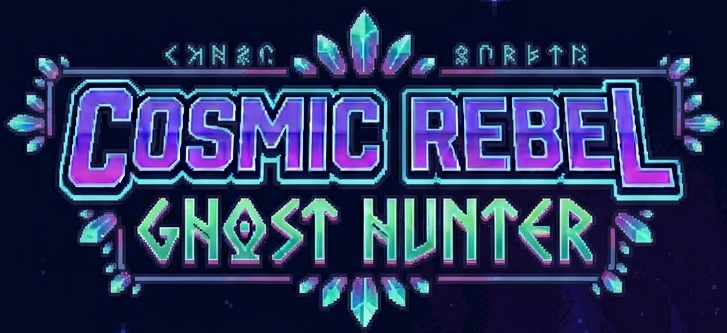
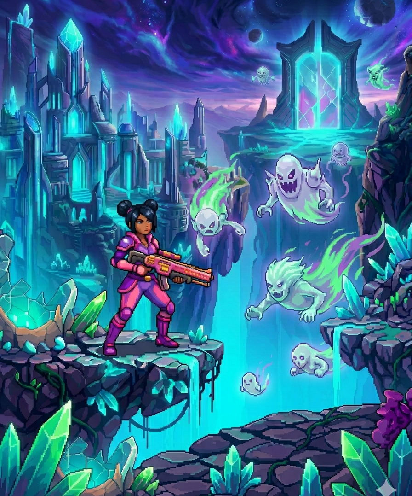

| Jokoa oso erraza da. 3 maila ditu, lehenengoa labirinto bat da, sugeek hil gabe gainditu behar dugu, bigarren maila errepide bat da, amaierara iritsi behar dugu azken maila pasatzeko, hirugarrena mapa desberdin bat da, mamu guztiak hil behar ditugu irabazteko. |  |
| Orri nagusi honetan nire jokoa aurkeztu nahi dut. Lehenik eta behin, jokoari buruz zerbait gehiago jakiteko, jakin behar duzue MakeCode Arcade tresnarekin sortu dela, Microsoftek bideo-joko errazak sortzeko ematen duen tresna baita. | |
| Zer dago jolasan? | |
|---|---|
|
|